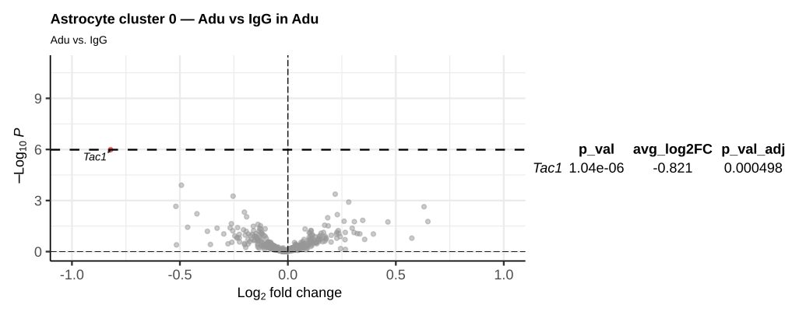
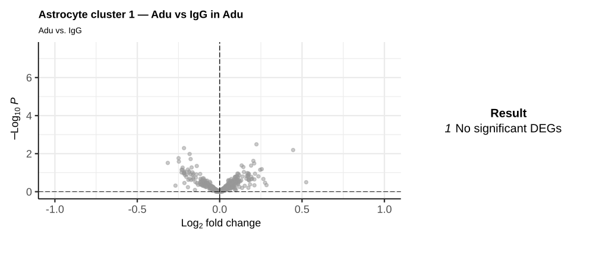
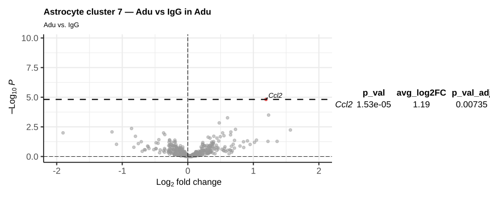

Code
library(qs2)
library(Seurat)
library(patchwork)
library(tidyverse)
library(kableExtra)
library(DESeq2)
library(gridExtra)
astro <- qs2::qs_read("seurat_objects/20260305-astro_0.3.qs2")Identification of Astrocyte subpopulations after subsetting and reclustering
library(qs2)
library(Seurat)
library(patchwork)
library(tidyverse)
library(kableExtra)
library(DESeq2)
library(gridExtra)
astro <- qs2::qs_read("seurat_objects/20260305-astro_0.3.qs2")# Load full object
full <- qs_read("seurat_objects/20260217_Part2_fullobj.qs2")
astro0 <- subset(full, subset = annotatedclusters == "Astrocyte")
# Keep only the assay needed for fresh SCTransform
DefaultAssay(astro0) <- "Xenium"
astro0 <- DietSeurat(astro0, assays = "Xenium", dimreducs = NULL, graphs = NULL)
# Drop Xenium image/FOV segmentation data; otherwise merge triggers huge future globals
astro0@images <- list()
# SCTransform on all astrocytes together (no split/merge, no integration)
astro <- astro0
astro <- SCTransform(
astro,
assay = "Xenium",
new.assay.name = "SCT",
verbose = FALSE
)DefaultAssay(astro) <- "SCT"
astro <- RunPCA(
astro,
assay = "SCT",
features = VariableFeatures(astro),
verbose = FALSE)# Elbow plot to visualise variance explained per PC
ElbowPlot(astro, ndims = 50) +
geom_vline(xintercept = 30, linetype = "dashed", color = "red") +
labs(title = "Elbow plot") +
theme_minimal()
# PCA biplots coloured by sample and treatment
p1 <- DimPlot(astro, reduction = "pca", group.by = "Slide") +
labs(title = "PCA — Slide")
p2 <- DimPlot(astro, reduction = "pca", group.by = "Treatment.Group") +
labs(title = "PCA — Treatment")
p1 + p2
# Set seed for reproducibility
set.seed(1234)
# Compute nearest neighbors using first 30 PCs
astro <- FindNeighbors(astro, reduction = "pca", dims = 1:30, graph.name = "astro_snn")
# Perform clustering at multiple resolutions for later comparison
astro <- FindClusters(astro, graph.name = "astro_snn", resolution = 0.3)
# Compute UMAP for visualization
astro <- RunUMAP(astro, reduction = "pca", dims = 1:30, verbose = FALSE)
# qs_save(astro, "seurat_objects/20260305-astro_0.3.qs2")resolution = 0.3
#|fig-width: 5
#|fig-height: 5
#| label: plot UMAPs 1
DimPlot(astro)
DimPlot(astro, split.by = "Treatment.Group")
FindAllMArkers run on log-normalized residual expression values from SCTransform in the SCT assay (Values are continuous and typically centered around 0)
Idents(astro) <- astro$seurat_clusters
DefaultAssay(astro) <- "SCT"
all_markers <- FindAllMarkers(astro, only.pos = TRUE, densify = TRUE)
# write_csv(all_markers, file = "results/20260305-astrocyte_all_markers_0.3.csv")source("20260217-helper_functions.R")
# Top 5 markers per cluster by avg_log2FC
top_genes <- read_csv("results/20260305-astrocyte_all_markers_0.3.csv",
show_col_types = FALSE) |>
group_by(cluster) |>
arrange(desc(avg_log2FC), .by_group = TRUE) |>
slice_head(n = 5) |>
pull(gene) |>
unique()
fiddle(astro,
genes_of_interest = top_genes,
classification_col = "seurat_clusters",
assay = "SCT")
Based on the top 5 marker genes per cluster, we assessed whether each cluster represents true astrocytes or contaminating cell types from the initial subsetting.
| Cluster | Top markers | Identity | Astrocyte? |
|---|---|---|---|
| 0 | Agt, Calb2, Apoc1, Pgm1, Folh1 | Astrocyte — Agt is a canonical astrocyte marker | Yes |
| 1 | Fezf2, Hsd11b1, Vim, Plpp3, Scg3 | Astrocyte — Vim and Hsd11b1 are astrocyte-enriched | Yes |
| 2 | Lamp5, Slc17a7, Egr1, Grin2a, Vip | Neurons — Slc17a7 (Vglut1) is glutamatergic; Lamp5/Vip are interneuron markers | No |
| 3 | Cd209a, Mgl2, Kcnj8, Slc47a1, Mrc1 | Perivascular macrophages / pericytes — Mrc1 (CD206), Cd209a, Mgl2 are macrophage markers; Kcnj8 is pericyte | No |
| 4 | Nlrp3, Cst7, Cd14, Itgax, Trem2 | Microglia (DAM) — classic disease-associated microglia signature | No |
| 5 | Mog, Mag, Cldn11, Ermn, Aspa | Oligodendrocytes — all canonical oligodendrocyte markers | No |
| 6 | Ido1, Nts, Tac1, Otof, Slc17a6 | Neurons — Slc17a6 (Vglut2) and Tac1 are neuronal markers | No |
| 7 | Cxcl10, Acod1, Ccl2, Ccl12, Tnf | Reactive astrocytes or immune — Cxcl10/Ccl2 can mark reactive astrocytes, but Tnf/Acod1 suggest immune contamination | Uncertain |
| 8 | Cldn5, Emcn, Flt1, Cxcl12, Klf4 | Endothelial cells — Cldn5, Flt1, Emcn are canonical endothelial markers | No |
| 9 | Ttr, Tmem212, Ccdc153, Lypd1, Otof | Ependymal / choroid plexus — Ttr, Ccdc153, Tmem212 are ependymal markers | No |
| 10 | Pdgfra, Tnr, Pllp, Plpp4, Lpcat2 | OPCs — Pdgfra is the canonical OPC marker | No |
Pseudobulk DESeq2 was performed on each true astrocyte cluster (0 and 1) separately, comparing aducanumab (Adu) vs isotype control (IgG) pooled across all brain regions. Raw Xenium counts were aggregated per biological sample using AggregateExpression, yielding one pseudobulk profile per brain (n = 3 Adu, n = 3 IgG per cluster).
source("20260217-helper_functions.R")
# Run pseudobulk DESeq2 for each true astrocyte cluster
DefaultAssay(astro) <- "Xenium"
clusters_of_interest <- c(0, 1, 7)
de_by_cluster <- map(clusters_of_interest, \(cl) {
# Subset to cells in this cluster
sub_obj <- subset(astro, seurat_clusters == cl)
# Pseudobulk aggregation per sample
bulk <- AggregateExpression(sub_obj, group.by = "sample_ID", return.seurat = TRUE)
# Map treatment metadata (AggregateExpression converts _ to -)
sample_meta <- distinct(sub_obj@meta.data, sample_ID, Treatment.Group) |>
mutate(bulk_id = gsub("_", "-", sample_ID))
bulk$Treatment.Group <- sample_meta$Treatment.Group[
match(colnames(bulk), sample_meta$bulk_id)
]
Idents(bulk) <- "Treatment.Group"
# DESeq2 via anayet helper
anayet(bulk,
ident1 = "Adu",
ident2 = "IgG",
test_method = "DESeq2",
min_pct = 0,
plot_title = paste("Astrocyte cluster", cl, "— Adu vs IgG"),
print_plot = FALSE)
}) |> set_names(paste0("cluster_", clusters_of_interest))
# saveRDS(de_by_cluster, "results/20260305-DEG_astrocytes_clusters0-1.rds")de_by_cluster <- readRDS("results/20260305-DEG_astrocytes_clusters0-1.rds")
# Display volcano plot + significant genes table for each cluster
walk(names(de_by_cluster), \(cl) {
res <- de_by_cluster[[cl]]
label <- gsub("_", " ", cl) |> str_to_title()
cat("\n\n###", label, "\n\n")
sig_tbl <- if (nrow(res$significant_results) > 0) {
res$significant_results |>
select(p_val, avg_log2FC, p_val_adj) |>
mutate(across(where(is.numeric), \(x) signif(x, 3))) |>
arrange(p_val_adj) |>
tableGrob(theme = ttheme_minimal(base_size = 18))
} else {
tableGrob(
data.frame(Result = "No significant DEGs"),
theme = ttheme_minimal(base_size = 20)
)
}
print(res$volcano_plot + wrap_elements(sig_tbl) + plot_layout(widths = c(2, 1)))
})

